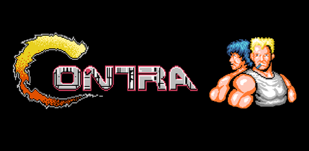
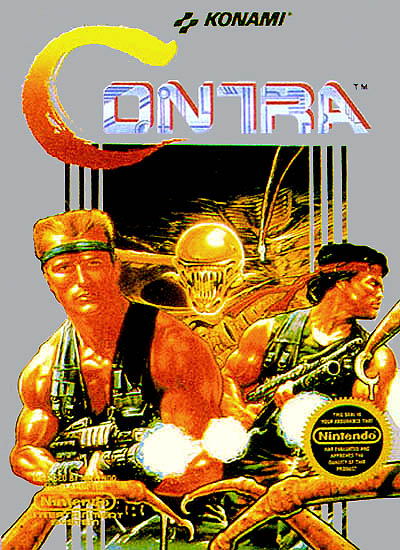
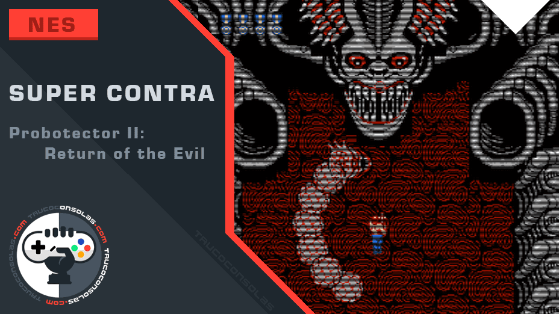
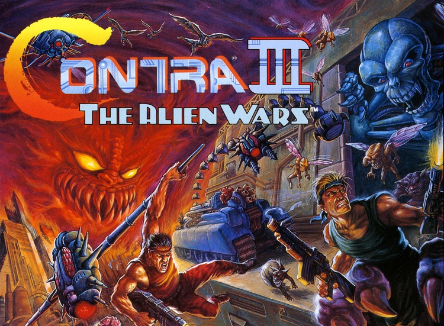
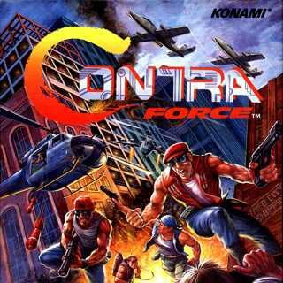

Contra (魂斗羅 Kontora?) es una serie de videojuegos creada por la compañía japonesa Konami en 1987, cuyos primeros títulos recibieron el nombre de Probotector en Europa. Son fundamentalmente Matamarcianos de tipo run and gun y están inspirados en películas
como Rambo o Alien. En Europa, en los primeros juegos de consolas caseras, los soldados humanos protagonistas y enemigos aliens humanoides fueron sustituidos, debido a la censura, por robots.
Cronologia

Contra, Probotector / Gryzor

Super Contra/Super C, Probotector 2: Return of the Evil Forces

Contra III: The Alien Wars, Super Probotector: Alien Rebels

Contra Force (solo en america)
Contra: Hard Corps, Probotector